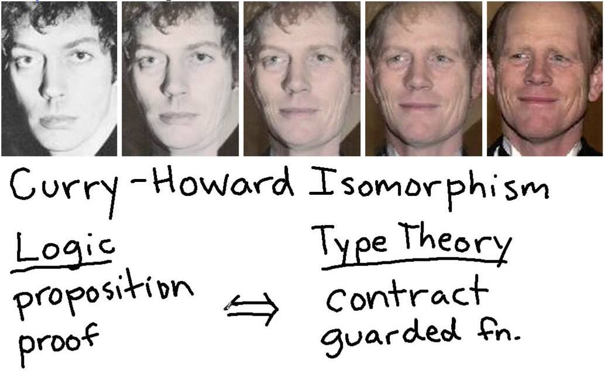
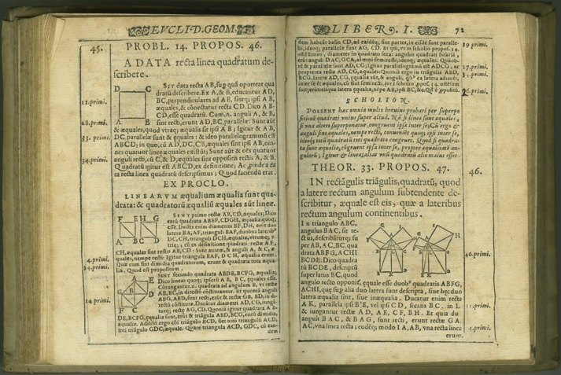

The Tale of Two Interfaces for the Lean Theorem Prover
Soonho Kong / Leonardo de Moura
Microsoft Research, 2014/10/24
Introduction: Lean
- New automated & interactive theorem prover
Introduction: Lean
- New automated & interactive theorem prover
- Powerful system for
- reasoning about complex systems
- reasoning about mathematics
- proving claims about both
Introduction: Lean
- New automated & interactive theorem prover
- Powerful system for complex systems and mathematics
- Automated + Interactive Theorem Proving
Big Picture
- Proving should be as easy as programming
Big Picture
- Proving should be as easy as programming 
Big Picture
- Proving should be as easy as programming
- Lean as a new engine for software verification tools
- much richer language
- multiple APIs (C/C++, Lua, Lean, Javascript)
Big Picture
- Proving should be as easy as programming
- Lean as a new engine for software verification tools
- Impact on education
Big Picture
- Proving should be as easy as programming
- Lean as a new engine for software verification tools
- Impact on education
- Live and formalized version of Euclid's Elements (book 1) 
Big Picture
- Proving should be as easy as programming\cite{Coquand1988}
- Lean as a new engine for software verification tools
- Impact on education
- Live and formalized version of Euclid's Elements (book 1)
- Natural deduction style proof = flowchart (BAD)
Big Picture
- Proving should be as easy as programming
- Lean as a new engine for software verification tools
- Impact on education
- Revolutionize mathematics.
"Develop software that mathematicians could
use in their everyday work, to do proofs."
– Vladimir Voevodsky (Fields Medalist)
The Logical Framework
- A version of the Calculus of Constructions with:
- an impredicative, proof irrelevant type Prop of propositions.
- a non-cumulative hierarchy of universes: Type 1, Type 2, … above Prop
- universe polymorphism
- inductively defined types
The Logical Framework
- A version of the Calculus of Constructions with:
- an impredicative, proof irrelevant type Prop of propositions.
- a non-cumulative hierarchy of universes: Type 1, Type 2, … above Prop
- universe polymorphism
- inductively defined types
- Features
- Kernel is constructive
- Smooth support for classical logic
- Support for HoTT (Homotopy Type Theory)
Reasoning about Abstractions
- At CMU, Jeremy Avigad, Floris van Doorn, and Jakob von Raumer are formalizing Category theory and Homotopy type theory using Lean.
Reasoning about Abstractions
- At CMU, Jeremy Avigad, Floris van Doorn, and Jakob von Raumer are formalizing Category theory and Homotopy type theory using Lean.
- Why this relevant?
Reasoning about Abstractions
- At CMU, Jeremy Avigad, Floris van Doorn, and Jakob von Raumer are formalizing Category theory and Homotopy type theory using Lean.
- Why this relevant?
- Stressing all lean major components
- "If we can do it, then we can do anything."
- Test if we can reason about higher-level abstractions
- In CS, we also want to reason about higher-level abstractions.
Constructive and Classical Logic
- Almost everything we do is constructive, but we want to support classical users smoothly.
Constructive and Classical Logic
- Almost everything we do is constructive, but we want to support classical users smoothly.
inductive decidable [class] (p : Prop) : Type := inl : p → decidable p, inr : ¬p → decidable p - "decidable" is the type class of decidable propositions.
Constructive and Classical Logic
- The excluded middle is a theorem for decidable propositions.
theorem em (p : Prop) [H : decidable p] : p ∨ ¬p := induction_on H (assume Hp, or.inl Hp) (assume Hnp, or.inr Hnp) - "[H : decidable p]" instructs Lean that H : decidable p is an implicit argument, and it should be synthesized automatically using type-class instantiation
Constructive and Classical Logic
- We have populated the lean standard library with many decidability results.
- Example: the conjunction of two decidable propositions is decidable
Constructive and Classical Logic
- We define `if-then-else` expressions as
definition ite (c : Prop) [H : decidable c] {A : Type} (t e : A) : A := decidable.rec_on H (assume Hc, t) (assume Hnc, e) notation `if` c `then` t:45 `else` e:45 := ite c t e - Lean will only allow us to use `if-then-else` for decidable propositions.
- By default, Lean will try to prove decidability using type-class resolution. If we write
import standard open nat decidable variables a b : nat check if a = b ∧ a > 0 then a else b - Lean automatically synthesizes the implicit argument `H : decidable c`.
(and_decidable (nat.has_decidable_eq a b) (ge_decidable a (succ 0)))
Constructive and Classical Logic
- When we import the classical axioms, then we can prove that all propositions are decidable.
Moreover, we can write arbitrary `if-then-else` expressions.
User Interfaces of Lean
- Why?
- Lean Library Developers
- From basics (logic connectives, int, nat, …) to advanced (category theory, HoTT).
- Lean Library Developers
User Interfaces of Lean
- Why?
- Lean Library Developers
- CMU 15-815 "Interactive Theorem Proving", Spring 2015
- Graduate Course
- by Prof. Edmund Clarke and Prof. Jeremy Avigad
- We will use Lean!
User Interfaces of Lean
- Why?
- Lean Library Developers
- CMU 15-815 "Interactive Theorem Proving", Spring 2015
- Tutorial on Lean (CADE, August 2015)
Two Interfaces of Lean
- Web user interface and Native user interface
Web Interface
- Works everywhere (desktop, mobild, tablet, etc)
- No need to install
- Interactive Manual, Slides, Tutorial, IDE, …
Web Interface
- Works everywhere (desktop, mobild, tablet, etc)
- No need to install
- Interactive Manual, Slides, Tutorial, IDE, …
- 100% Javascript!
Web Interface
- Works everywhere (desktop, mobild, tablet, etc)
- No need to install
- Interactive Manual, Slides, Tutorial, IDE, …
- 100% Javascript!
- Running on your webbrowser
- No server is required
- Lean.JS API is available
- Logical reasoning engine for many applications
Web Interface
- Live Demo: http://leanprover.github.com/live
Web Interface
- Live Demo: http://leanprover.github.com/live
- Functionalities
- Executing Lean
- Input Method (\(\lambda\), \(\alpha\), …)
- Syntax Check
- Auto Completion
- Cloud Support (Dropbox, …)
- Sharing
- More to come!
Native Interface
- Richer functionalities: showing typing, coersion, overloading, jump to definition, …
- Multi-core support, incremental compilation.
- Lean Server: General protocol using asynchronous communication
- Load File, Visit File, Synchronize, Replace Line, Insert Line, Info, Set Option, Eval, …
- Documentation is available.
Native Interface
- Richer functionalities: showing typing, coersion, overloading, jump to definition, …
- Multi-core support, incremental compilation.
- Lean Server: General protocol using asynchronous communication
- For now, we support emacs

Native Interface
- Live Demo!
Native Interface
- Live Demo!
- Functionalities
- Show type information, overloading, coersion
- Context-aware auto-completion
- On-the-fly compilation
- Jump to the definition
- Show the synthesized term for placeholders
- More to come!
Future Work
- Definitional package: convert recursive equations into recursors.
The user wants to write
instead of
Future Work
- More automation
- Simplifier
- SMT-like engines
- Arithmetic
Future Work
- Lecture notes and tutorial
- Course on interactive theorem proving at CMU
- Tutorial at CADE'15